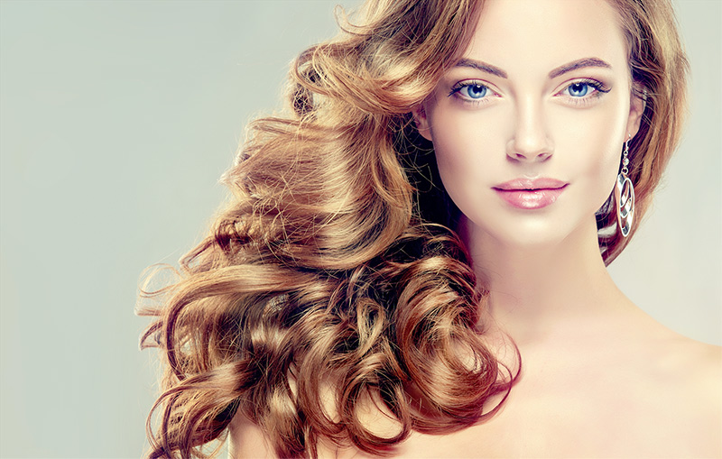

filter: contrast(40%);
filter: blur(3px);
filter: brightness(200%);
filter: hue-rotate(90deg);
filter: saturate(10);
filter: sepia(100%);
filter: grayscale(100%);
filter: brightness(2) invert(1) grayscale(1)
filter: drop-shadow(3px 3px 5px black);
filter: invert(1);
filter: url(*.xml);